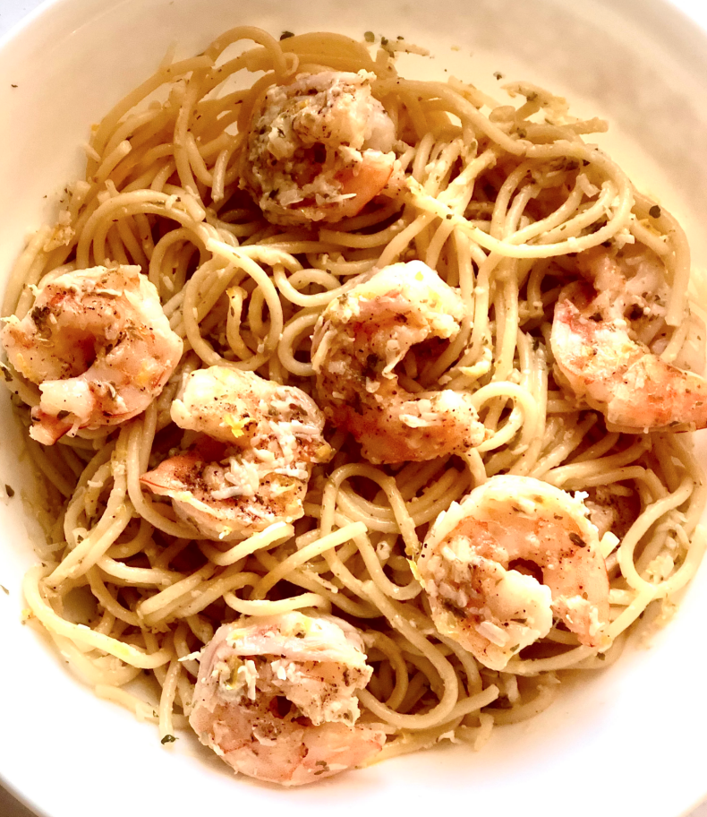

Lemon Shrimp Pasta

Picture provided by allrecipes
Description
This is a very lightly sauced pasta with lemon and shrimp. It's refreshing as well as filling.
Ingredients
- 1 (16 ounce) package fresh linguine pasta
- 1 tablespoon olive oil
- 1 pound shrimp, peeled and deveined
- 1 teaspoon salt
- 1 teaspoon ground black pepper
- 1 lemon, zested and juiced
- 2 tablespoons chopped fresh parsley
- 2 tablespoons butter
- 1 cup freshly grated Parmesan cheese
Preperation
- Bring a large pot of lightly salted water to a boil.
- Meanwhile, heat oil in a pan over medium heat. Coat shrimp with salt and pepper. Cook and stir shrimp in the
hot oil until opaque, about 2 minutes per side.
- Cook linguine in the boiling water until tender yet firm to the bite, 1 to 3 minutes.
- Combine lemon zest and juice in a small saucepan over medium heat and bring to a simmer. Sprinkle in parsley
and stir in butter until melted. Add 2 tablespoons of the pasta cooking water and stir. Drain pasta. Add
shrimp to the lemon sauce. Mix pasta, shrimp, sauce, and Parmesan cheese together in a large serving bowl.
Nutrition Facts
Per servering: 5Per Serving: 585 calories; protein 39.4g; carbohydrates 65.5g; fat
18.5g;cholesterol 287.2mg; sodium 1157.6mg.